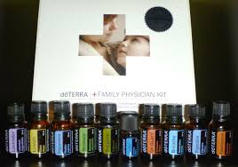

<!DOCTYPE html>
<html lang="en">
    <head>
        <meta charset="utf-8" />
        <title>家庭醫生套組</title>
    </head>

    <body background="002.jpg"></body>
    <hr>
    
    
    </hr>
      <i><strong> <a href="index.html"><font color=red>如何使用精油</font></a></i></strong>
      <i><strong> <a href="CPTG認證.html"><font color=red>CPTG認證精油</font></a></i></strong>
       <i><strong> <a href="芳香魔法噴霧DIY.html"><font color=red>芳香魔法噴霧DIY</font></a></i></strong>
         <audio src="天使療癒.mp3"autoplay></audio>

     <br> 
         <strong><h1><mark><font size="5"></font></font>CPTG專業純正調理級認證</mark><br></h1>   
      <strong><mark><font size="4">家庭醫生套組</mark> 

<strong><P></P><mark>薰衣草精油（Lavender）</mark>
薰衣草是最受歡迎的精油。具鎮靜和舒壓作用、淨化空氣。

<P></P><mark>檸檬精油（Lemon）</mark>
檸檬皮經過冷壓程序製成，保存本質和、消除氣味和細菌。

<P></P><mark>薄荷精油（Peppermint）</mark>
薄荷精油可用來安神定氣，也可以幫助消化。

<P></P><mark>茶樹精油（Melaleuca）</mark>
茶樹是皮膚科醫生，具有凈化和再生的能力。

<P></P><mark>乳香精油（Frankincense）</mark>
最古老的珍貴香料。

<P></P><mark>舒緩複方精油（Deep Blue®）</mark>
Deep Blue™鎮定複方精油含冬青、樟樹、薄荷、藍艾菊、洋甘菊、蠟菊、桂花（不可食）。

<P></P><mark>牛至精油（Oregano）</mark>
醫學之父希伯克拉底用牛至來作凈化劑，含有酚酸和類黃酮素。

<P></P><mark>保衛複方精油（On Guard™）</mark>
On Guard ™是獨家調配，可用噴霧的方式凈化空氣、消毒。含野橘、丁香、肉桂、尤加利樹、迷迭香。

<P></P><mark>順暢呼吸複方精油（Breathe）</mark>
能保持呼吸順暢、凈化並安定呼吸道。可用噴霧器噴灑在屋內。含月桂葉、薄荷、尤加利樹、茶樹、檸檬和羅文莎葉。（不可食）

<P></P><mark>樂活複方精油（DigestZen™）</mark>
DigestZen™複方精油含生薑、薄荷、龍蒿、茴香、葛縷子、胡荽和大茴香。</strong>

<P><table width=80%  align=center border=1 bordercolor=#006633 cellspacing=0 class=text>
<tr align=center bgcolor=#ff88ff>
    <th width=30% height=45><font size="5">名稱</th>
    <th width=60% height=45><font size="5">網址</th>
    
</tr> 
   
<tr valign=top bgcolor=#eeffff>
<td>什麼是精油</td>
<td><a href="https://www.youtube.com/watch?v=4-m5sSFFwZY">https://www.youtube.com/watch?v=4-m5sSFFwZY</a></td>
</tr>

<tr valign=top bgcolor=#eeffff>
<td>CPTG專業純正調理級認證精油 </td>
<td><a href="https://www.youtube.com/watch?v=o2_JUdx7FXA">https://www.youtube.com/watch?v=o2_JUdx7FXA</a></td>
    
<tr valign=top bgcolor=#eeffff>
<td >家庭醫生組 </td>
<td ><a href="https://www.youtube.com/watch?v=GI68t-ZHHUY&list=PL1YPhokux5D1TTtzMlcrHzvlElg15lU6T"> 
      https://www.youtube.com/watch?v=GI68t-ZHHUY&list=PL1YPhokux5D1TTtzMlcrHzvlElg15lU6T</a></td>
     
<tr valign=top bgcolor=#eeffff>
<td >精油達人在我家</td>
<td><a href="https://www.youtube.com/watch?v=e6VIPQhA-Wg">https://www.youtube.com/watch?v=e6VIPQhA-Wg</a></td>
</tr>

</table>


        
       

        </p>
        <br>
        
    </body>
</html>


